<meta charset="utf-8">
<meta name="viewport" content="width=device-width, initial-scale=1">
<title>ARBot – Verze</title>
<link rel="icon" href="../assets/img/arbot-logo.png">
<link rel="preconnect" href="https://fonts.googleapis.com">
<link rel="preconnect" href="https://fonts.gstatic.com" crossorigin>
<link rel="stylesheet" href="https://fonts.googleapis.com/css2?family=Archivo:wght@500;600;700&amp;family=JetBrains+Mono:wght@400;600&amp;family=Newsreader:opsz,wght@6..72,400;6..72,500;6..72,600&amp;display=swap">
<link rel="stylesheet" href="../assets/site.css">

<header class="sitehead">
  <a class="brand" href="../index.html"><span>ARBot</span></a>
  <nav>
      <a href="../index.html">Úvod</a>
      <a href="../pages/prezentace.html">Jak to funguje</a>
      <a href="../pages/historie.html">Historie</a>
      <a href="../pages/umisteni-v-soutezich.html">Umístění v soutěžích</a>
      <a href="../pages/verze.html" class="on">Verze</a>
      <a href="../pages/model-diferencialniho-podvozku.html">Model podvozku</a>
      <a href="../pages/detekce-kraje-vozovky.html">Detekce kraje vozovky</a>
      <a href="../pages/kontakt.html">Kontakt</a>
  </nav>
</header>
<main>
  <div class="pagehead">
    <p class="eyebrow">2008 &rarr; dnes</p>
    <h1>Verze</h1>
    <p class="lead">Tři generace robota. Co fungovalo, zůstalo; co nefungovalo, se přepracovalo.</p>
  </div>

<section class="first">
  <h2 id="srv1">Verze SRV1</h2>
  <p>Jednoho krásného dne roku 2008 mi kámoš poslal odkaz na video BigDog &mdash; Boston Dynamics.
     Srdce feláka mi poskočilo, naprosto mne to nadchlo. Vzpomněl jsem si na studijní léta na ČVUT
     FEL, na řízení kuličky na nakloněné rovině, na laboratoř strojovna a robot
     „Красный пролетар“, na laboratoř počítačového vidění a hraní robotem v kostky.</p>
  <p>Na internetu jsem našel spoustu zajímavých konstrukcí. Od hexapodů, přes kolové až po létající
     stroje. Našel jsem prodejce robotických komponent, ale stále mi trošku chyběla nějaká motivace,
     nějaký cíl. Až jsem narazil na <a href="https://www.robotika.cz">www.robotika.cz</a> a soutěž
     Robotour. Relativně jednoduchá konstrukce potřebného robotu a přitom netriviální chování,
     i když to jsem si v tu chvíli nemyslel, vlastně mi to přišlo vcelku jednoduché.</p>
  <p>Několik dní jsem procházel internet, různé konstrukce, dostupné komponenty a robotické teorie.
     Rozhodl jsem se pro čtyřkolový smykem řízený podvozek s enkodérem na každém motoru, pro detekci
     překážek použít tři sonary, k orientaci dle světových stran poslouží kompas a pro určení
     globální pozice GPS. Kamera dává mnohé možnosti pro řízení robotu, ale k tomu je potřebný
     značný výpočetní výkon. NiMH akumulátor bude dostatečně odolný a výkoný.</p>
  <p>Sestavil jsem seznam materiálu:</p>
  <ul>
    <li>šasi A4WD1 od Lynxmotion,</li>
    <li>2&times; motorové řídící jednotky MD23,</li>
    <li>4&times; motory EMG30,</li>
    <li>4&times; kola 100 mm,</li>
    <li>3&times; sonar SRF08,</li>
    <li>GPS DS GPM,</li>
    <li>kompas CMPS03,</li>
    <li>řídící jednotka SRV01 s DSP BF537, kamerou OV9655, a WiFi modulem,</li>
    <li>10&times; NiMH 4,5 Ah.</li>
  </ul>
  <p>Z uvedených component jsem sestrojil pokusnou verzi na které se projevil take první problem.
     Hladká kola dobře fungovala na linu či parketách, ale v terénu prokluzovala a robot se špatně
     pohyboval.</p>
</section>

<figure class="wide">
  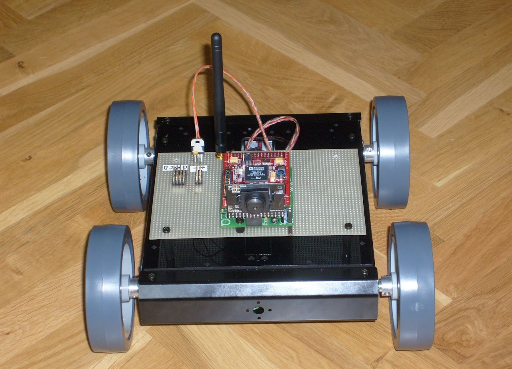
  <figcaption>SRV1 &mdash; první pokus</figcaption>
</figure>

<section>
  <p>Hladká kola jsem vyměnil za outdoor verzi o průměru 110 mm.</p>
  <p>Dalším problémem, který na sebe nedal dlouho čekat, byla GPS. Ukázalo se, že má velmi vážný
     problem s příjmem signálu v blízkosti BlackFin procesoru. Pro dobrý příjem bylo nutné dát GPS
     do vzdálenosti cca 50 cm od DSP. To nebylo akceptovatelné a tak jsem vybral GPS LEA-5H
     od uBloxu, která je podstatně odolnější rušení. A aby toho nebylo dost tak jsem měřením
     zjistil, že kompas CMPS03 má dost mizernou převodní charakteristiku. Chyba 15 stupňů žádný
     problem. Graf bohužel skončil kdesi v propadlišti dějin a tak nezbývá než uvěřit. Kompas byl
     nahrazen vynikající AHRS jednotkou VN-100 od VectorNav. Což se ukázalo jako dobrý tah. Další
     úpravou byla výměna motorových jednotek MD23, které tuhly, za kvalitnější MD25.</p>
</section>

<figure class="wide">
  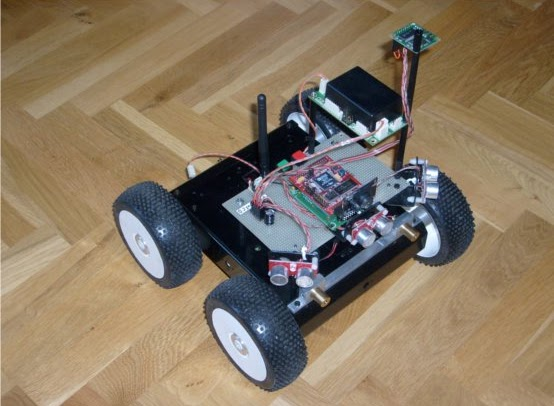
  <figcaption>SRV1 &mdash; po úpravách</figcaption>
</figure>

<section>
  <p>Poslední „ranou“ bylo rozhodnutí organizátorů Robotur o povinosti vézt 5l soudek piva.
     Pro robota s vahou 2 kg docela slušnej náklad. Tento požadavek si vyžádal přeuspořádání
     a posun řídící elektroniky do 2. patra. Robot byl doplněn o LED osvětlení pro noční jízdu
     a OLED display sloužící pro ovládání a zobrazení základních informací o stavu robotu.</p>
  <p>Finálně je robot sestaven z:</p>
  <ul>
    <li>šasi A4WD1 od Lynxmotion,</li>
    <li>2&times; motorové řídící jednotky MD25,</li>
    <li>4&times; motory EMG30,</li>
    <li>4&times; outdoor kola 110 mm,</li>
    <li>3&times; sonar SRF08,</li>
    <li>GPS uBlox LEA-5H,</li>
    <li>AHRS vectornav VN-100,</li>
    <li>OLED display &mu;OLED-3202X-P1T,</li>
    <li>řídící jednotka SRV01 s DSP BF537, kamerou OV9655, a WiFi modulem,</li>
    <li>10&times; NiMH 4,5 Ah.</li>
  </ul>
</section>

<figure class="wide">
  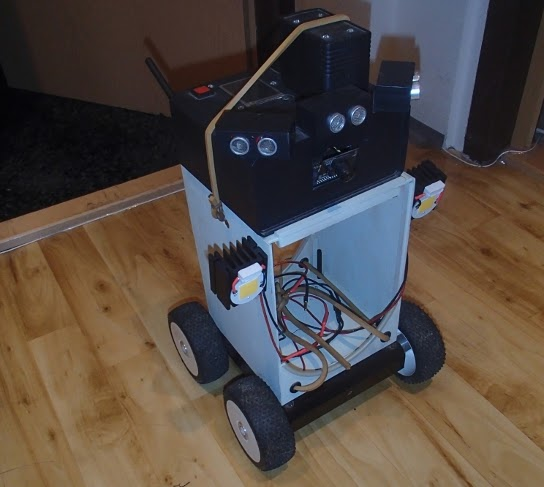
  <figcaption>SRV1 &mdash; finální verze</figcaption>
</figure>

<section>
  <p>Ještě jsem dlužen pohled pod kapotu.</p>
</section>

<figure class="wide">
  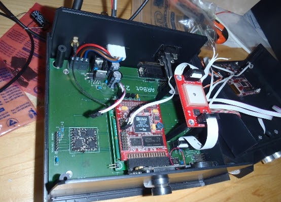
  <figcaption>SRV1 &mdash; střeva</figcaption>
</figure>

<section>
  <p>V roce 2014 nastal čas postoupit dál.</p>

  <h2 id="z">Verze Z</h2>
  <p>Po více jako roce příprav se začátkem roku 2015 konečně podařilo sestavit nového robota.
     Vychází ze zkušeností s předchozím vozítkem. Dobře fungující věci byly zachovány a ty slabší
     byly přepracovány či aspoň vylepšeny.</p>
  <p>V první řadě byla vyměněna řídící jednotka. Je použita vývojová deska Zedboard s SoC Zynq 7020
     od Xilinx. K dispozici je 512 MB RAM, 32 GB SD, srdcem je dvoujádrový ARM Cortex A9 + NEON
     na 600 MHz a hlavně hradlové pole o 85 tisících logických jednotek. Zedboard běží na Linuxu
     a jako hlavní programovací platforma je použito mono a jazyk C#.</p>
  <p>Místo smykem řízeného podvozku je použit diferenciální s 3. pasivním kolem. Modelářská kola
     o průměru 17 cm a dva motory PG36555126000-50.9K řízené profesionální jednotkou SDC2160
     od Robotequ poskytují potřebnou trakci.</p>
  <p>Šasí je postaveno z letecké 2 mm překližky a smrkových nosníků 7 mm. Prostě modelařina.
     Jednotlivé díly byly řezány laserem a až na pár drobných chybek ve výkresech vše sedlo
     naprosto dokonale.</p>
  <p>Osvědčená AHRS VN-100 od VectorNav byla zachována, jen došlo k upgradu na nejnovější verzi.
     Obdobně GPS uBlox NEO 7M je novější verzí původní.</p>
  <p>Počet sonarů byl zredukován na 2, za to každý ze sonarů je možné natáčet servem HC-SR04.
     Uvidíme, zda to bude přínosem. Serva ovládá jednotka SSC-32. 32 serv by mohlo snad stačit
     i do budoucna.</p>
  <p>Novinkou v senzorech jsou dva optické odometry založené na ADNS 3080, snad pomohou lépe
     odečítat polohu a orientaci robotu. Dalším novým smyslem je „hmat“. Robot má dva taktilní
     FSR senzory integrované v předním nárazníku.</p>
  <p>Energii robotu dodávají 4 LiFePo články o kapacitě 14,5 Ah chráněné SBM. Dost bylo zoufalého
     pípání při podpětí a zničených článků.</p>
  <p>To nejlepší nakonec. Z obrazu kamery se dá vytáhnout mnoho informací a tak má robot
     stereoskopickou kameru vlastní konstrukce s čipy Aptina MT9V032, které mají globální uzávěrku
     a jsou schopny pracovat v HDR režimu. Data je nutné nějak zpracovat a právě k tomu je použito
     hradlové pole. Tím se nám kruh pěkně uzavřel. Jo, kamera je pomocí serv pohyblivá ve dvou osách.</p>
  <p>A jak to celé vypadá?</p>
</section>

<figure class="strip wide">
  <div class="strip-scroll">
      <a href="../assets/img/verze-z-celek-01.jpg" target="_blank" rel="noopener">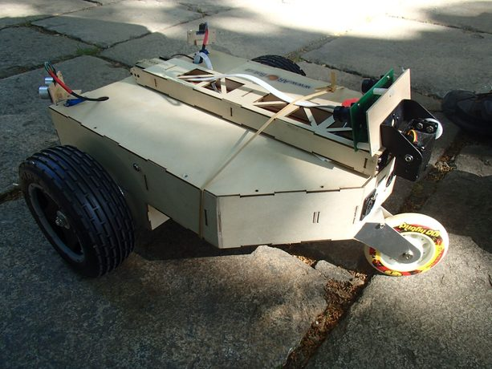</a>
      <a href="../assets/img/verze-z-celek-02.jpg" target="_blank" rel="noopener">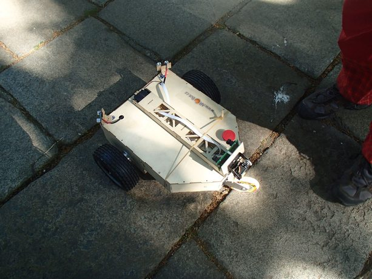</a>
      <a href="../assets/img/verze-z-celek-03.jpg" target="_blank" rel="noopener">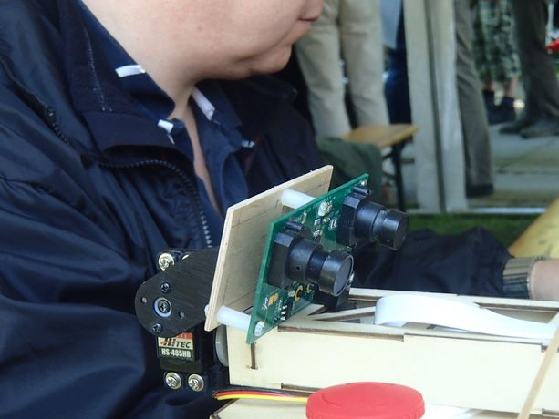</a>
      <a href="../assets/img/verze-z-celek-04.jpg" target="_blank" rel="noopener">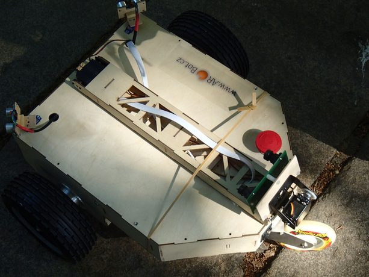</a>
      <a href="../assets/img/verze-z-celek-05.jpg" target="_blank" rel="noopener">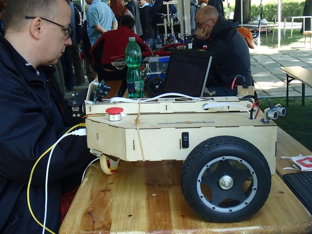</a>
      <a href="../assets/img/verze-z-celek-06.jpg" target="_blank" rel="noopener">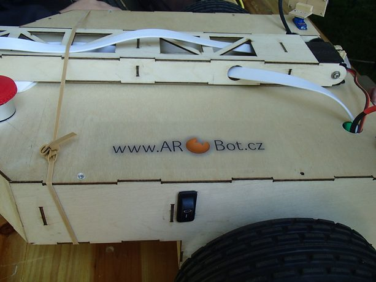</a>
      <a href="../assets/img/verze-z-celek-07.jpg" target="_blank" rel="noopener">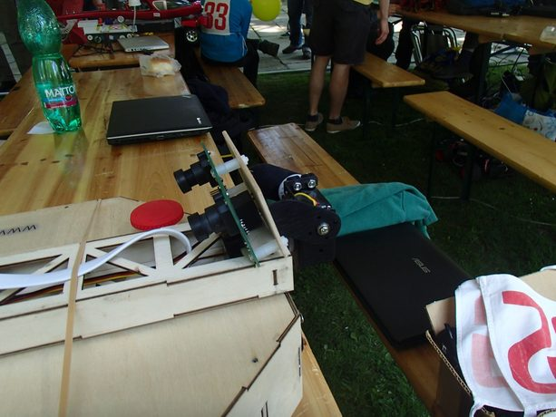</a>
      <a href="../assets/img/verze-z-celek-08.jpg" target="_blank" rel="noopener">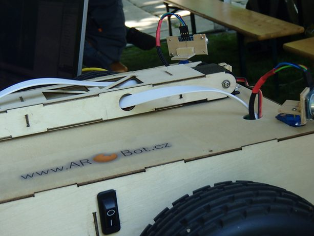</a>
      <a href="../assets/img/verze-z-celek-09.jpg" target="_blank" rel="noopener">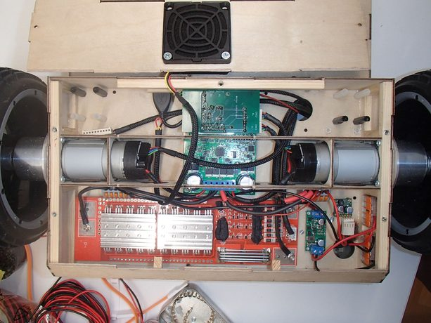</a>
      <a href="../assets/img/verze-z-celek-10.jpg" target="_blank" rel="noopener">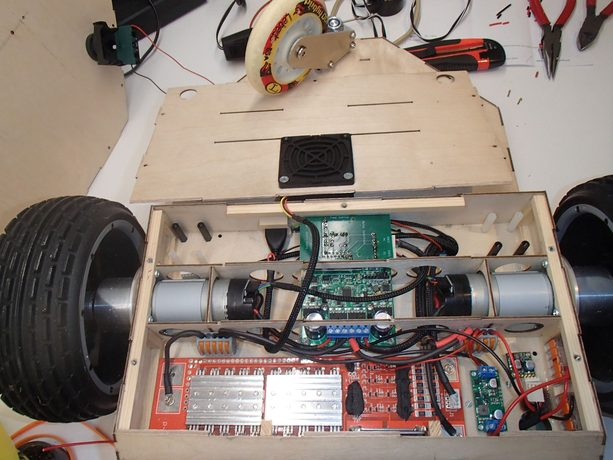</a>
      <a href="../assets/img/verze-z-celek-11.jpg" target="_blank" rel="noopener">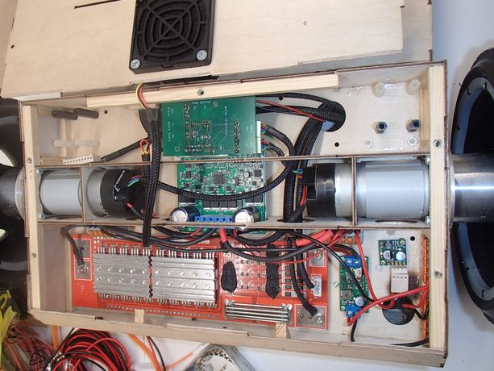</a>
      <a href="../assets/img/verze-z-celek-12.jpg" target="_blank" rel="noopener">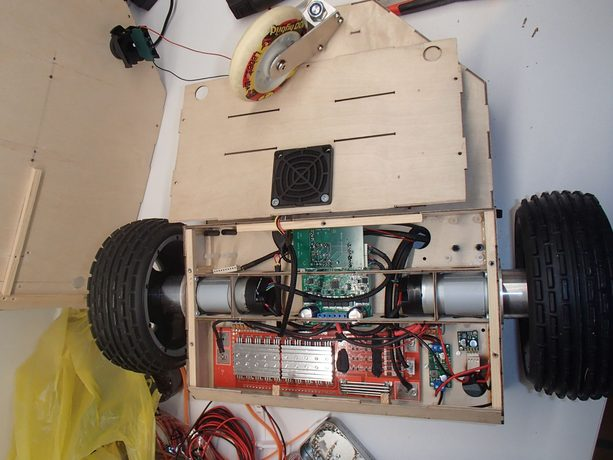</a>
      <a href="../assets/img/verze-z-celek-13.png" target="_blank" rel="noopener">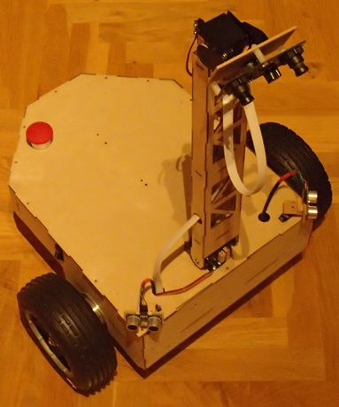</a>
  </div>
  <figcaption><b>Verze Z.</b> Šasi z letecké překližky řezané laserem, kola 17 cm, třetí pasivní kolo, stereoskopická kamera na pohyblivém rameni. <span class="hint">&nbsp;&middot;&nbsp; 13 fotek, posouvá se do stran &middot; klik otevře plnou velikost</span></figcaption>
</figure>

<section>
  <p>Jak to tak bývá, první problémy na sebe nedaly dlouho čekat. Rameno o délce 40 cm neudrží
     v klidu ani velmi silné modelářské servo. Navíc furt zabírá, pěkně se hřeje a žere proud.
     Další zádrhel se objevil u stereoskopické kamery. Přenos dat mezi čipy a FPGA probíhá
     po 500MHz sériové lince. Pro FPGA by to neměl být problém. Podporuje až 12,5 GHz. Nicméně
     komunikace vypadávala ze synchronu a to tak často, že byla kamera prakticky nepoužitelná.
     Proto byla v roce 2016 stereoskopická kamera dočasně nahrazena běžnou web kamerou.</p>
</section>

<figure class="strip wide">
  <div class="strip-scroll">
      <a href="../assets/img/verze-z-soutez-01.jpg" target="_blank" rel="noopener">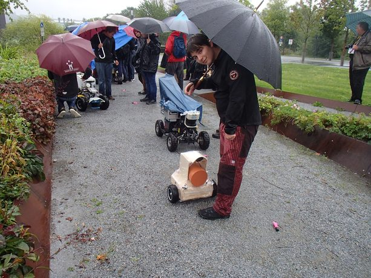</a>
      <a href="../assets/img/verze-z-soutez-02.jpg" target="_blank" rel="noopener">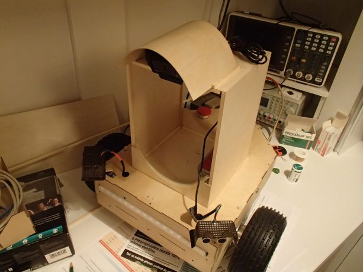</a>
      <a href="../assets/img/verze-z-soutez-03.jpg" target="_blank" rel="noopener">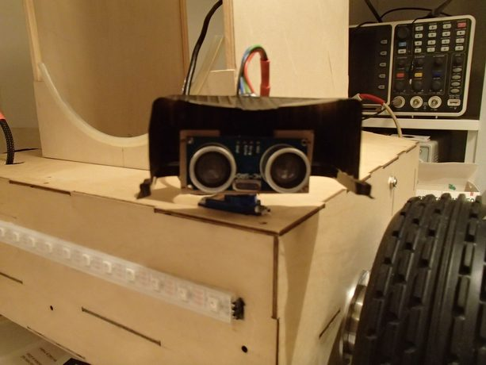</a>
      <a href="../assets/img/verze-z-soutez-04.jpg" target="_blank" rel="noopener">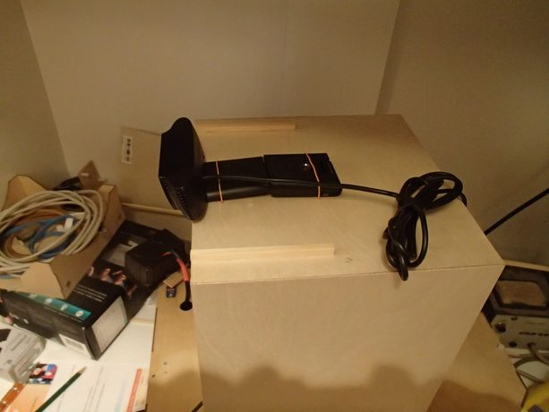</a>
      <a href="../assets/img/verze-z-soutez-05.jpg" target="_blank" rel="noopener">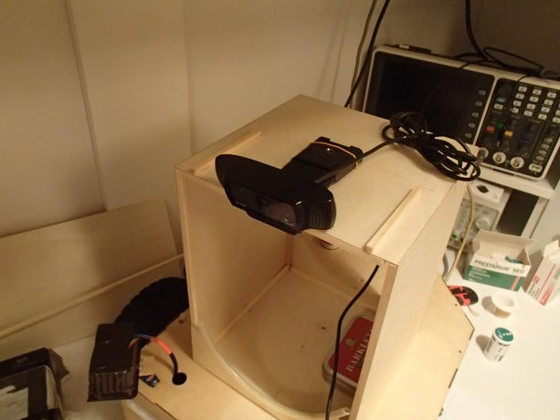</a>
      <a href="../assets/img/verze-z-soutez-06.jpg" target="_blank" rel="noopener">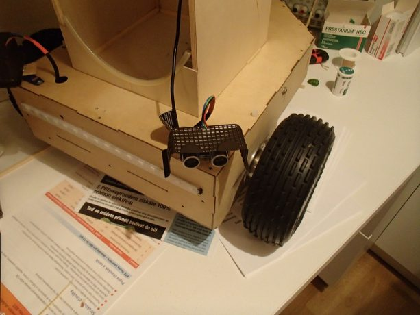</a>
  </div>
  <figcaption><b>Verze Z v terénu a na soutěži.</b> <span class="hint">&nbsp;&middot;&nbsp; 6 fotek, posouvá se do stran &middot; klik otevře plnou velikost</span></figcaption>
</figure>

<section>
  <p>S příchodem stereoskopické kamery RealSense R200 od Intelu byl ukončen vývoj vlastní 3D kamery.
     No a když už nebyl potřeba ani výkon FPGA pro zpracování obrazu, tak bylo možné ukončit
     trápení s Linuxem a přejít na normální operační system. Tím nastala éra verze U2.</p>

  <h2 id="u2">Verze U2</h2>
  <p>Od roku 2017 došlo k dalším změnám hardware. V první řadě jsem se rozhodl vyměnit řídící
     počítač. Volba padla na SBC UP squared s procesorem Intel&reg; Pentium&trade; N4200 a operačním
     systémem Windows 10. Po dobu než SBC dorazil, jezdil robot s notebookem Acer. Kamera byla
     nahrazena stereoskopickou RealSense R200 od Intelu, která se otáčí podle svislé osy a nově byl
     použit RPLidar A2.</p>
</section>

<figure class="strip wide">
  <div class="strip-scroll">
      <a href="../assets/img/verze-u2-01.jpg" target="_blank" rel="noopener">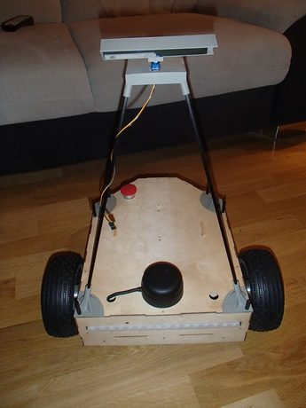</a>
      <a href="../assets/img/verze-u2-02.jpg" target="_blank" rel="noopener">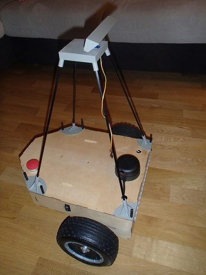</a>
      <a href="../assets/img/verze-u2-03.jpg" target="_blank" rel="noopener">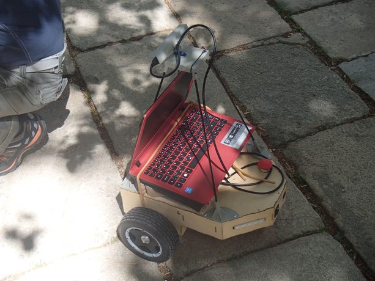</a>
      <a href="../assets/img/verze-u2-04.jpg" target="_blank" rel="noopener">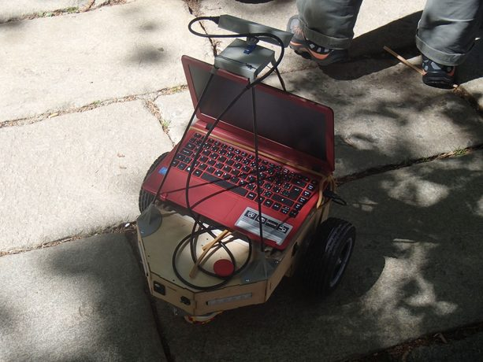</a>
      <a href="../assets/img/verze-u2-05.jpg" target="_blank" rel="noopener">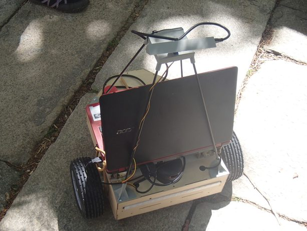</a>
      <a href="../assets/img/verze-u2-06.jpg" target="_blank" rel="noopener">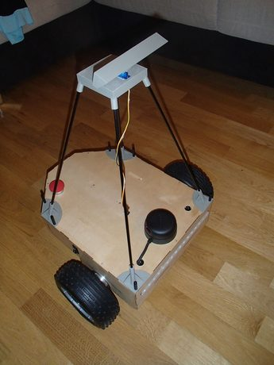</a>
  </div>
  <figcaption><b>Verze U2.</b> Nový řídicí počítač, stožár se senzory, nouzové zastavení a osvětlení. <span class="hint">&nbsp;&middot;&nbsp; 6 fotek, posouvá se do stran &middot; klik otevře plnou velikost</span></figcaption>
</figure>

<section>
  <p>V roce 2019 byla kamera R200 nahrazena dvěma RealSense D435 a odstraněn lidar. O rok později
     přibyla ještě RealSense T265 a Edge TPU Coral pro segmentaci obrazu pomocí neuronové sítě,
     který vyhrál souboj s UP AI Core X. Rok 2021 přinesl novou GPS od uBloxu NEO-M9N a hlavně
     se podařilo rozchodit EKF pro výpočet stavu robotu.</p>
</section>

<figure class="strip wide">
  <div class="strip-scroll">
      <a href="../assets/img/verze-u2-2019-01.jpg" target="_blank" rel="noopener">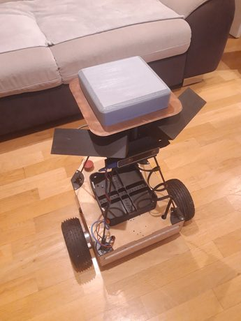</a>
      <a href="../assets/img/verze-u2-2019-02.jpg" target="_blank" rel="noopener">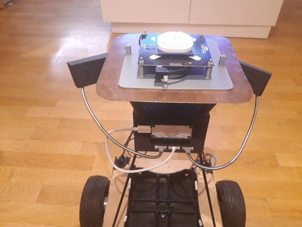</a>
      <a href="../assets/img/verze-u2-2019-03.jpg" target="_blank" rel="noopener">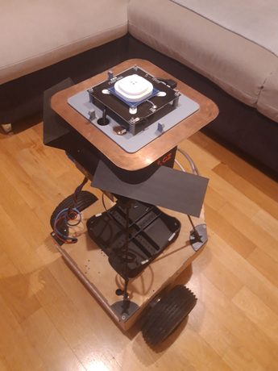</a>
      <a href="../assets/img/verze-u2-2019-04.jpg" target="_blank" rel="noopener">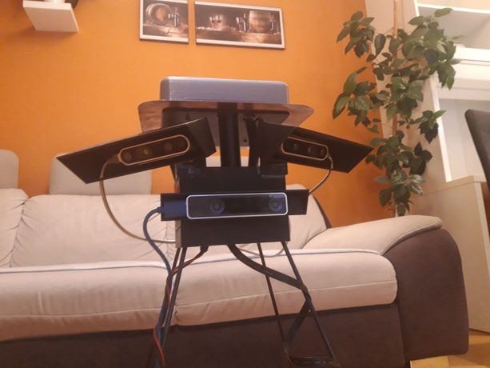</a>
      <a href="../assets/img/verze-u2-2019-05.jpg" target="_blank" rel="noopener">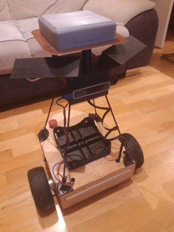</a>
  </div>
  <figcaption><b>U2 od roku 2019.</b> Dvě kamery RealSense D435 místo R200, bez lidaru, nahoře tištěná skříň elektroniky. <span class="hint">&nbsp;&middot;&nbsp; 5 fotek, posouvá se do stran &middot; klik otevře plnou velikost</span></figcaption>
</figure>

<section>
  <p>Dnešní podobu softwaru &mdash; dvě hloubkové kamery, neuronovou síť běžící na NPU, fúzi senzorů
     a plánování &mdash; popisuje stránka <a href="prezentace.html">Jak to funguje</a>.</p>
</section>

<footer>
  <div class="foot-in">
    <span class="mono">ARBOT &middot; AUTONOMNÍ MOBILNÍ ROBOT</span>
    <span>Zdrojový kód, vývojová dokumentace a měření:
      <a href="https://github.com/AlesRuda/ARBot3">github.com/AlesRuda/ARBot3</a></span>
  </div>
</footer>
</main>
